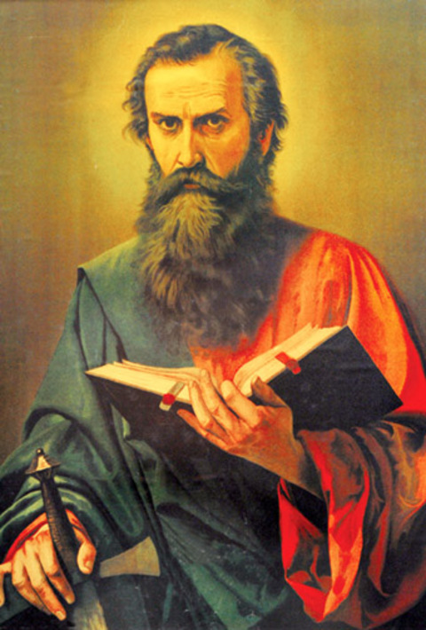

Este site tem o intuito de lhe mostrar as 6 principais cidades do Brasil
São Paulo (SP) é um estado brasileiro localizado na região Sudeste,
está entre as cidades mais populosas do mundo, com diversas instituições culturais e uma rica tradição arquitetônica. Há prédios simbólicos
como a catedral neogótica, o Edifício Martinelli, um arranha-céu inaugurado em 1929, e o Edifício Copan, com suas linhas curvas projetadas pelo
arquiteto modernista Oscar Niemeyer. A igreja em estilo colonial do Pátio do Colégio marca o local onde os padres jesuítas fundaram a cidade em 1554

São Paulo surgiu como missão jesuítica, em 25 de janeiro de 1554, reunindo em seus primeiros territórios habitantes de origem tanto europeia
quanto indígena. Com o tempo, o povoado acabou caracterizando-se como entreposto comercial e de serviços de relativa importância regional.
a cidade, ganhou esse nome justamente porque sua fundação ocorreu na mesma data em que se comemora a conversão do apóstolo Paulo de Tarso. São Paulo,
o apóstolo dos gentios, é considerado uma das figuras mais importantes no desenvolvimento do cristianismo
O estado de São Paulo é de fundamental importância para a economia nacional, sendo responsável por um terço do Produto Interno Bruto (PIB) brasileiro,
destaca-se, principalmente, por seu parque industrial.